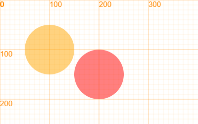

图形变换¶
所有的图形都可以在画布上按照一定的规律进行变换。形变包括平移、缩放、旋转，通过这几种变换，可以从简单的图形变化出各种图形。
图形的简单形变¶
平移¶
除了使用x，y对图形对象进行移动外，还可以使用平移的方式进行。
var circle = new Circle(100, 100, 50);
circle.draw();
circle.translate(100, 50);
circle.fillStyle = "red";
circle.draw();
在没有改变circle的坐标前提下，我们把circle的位置改变了。

实例：走路
我们可以用平移来模拟角色在移动时候的晃动，比我们直接去计算坐标要方便的多。
var role = new Sprite("https://r.leaplearner.com/i/robot1.png", 0, 200, 50, 60);
role.translate(0, new Swing(-5, 5, 1));
function draw(){
canvas.clear();
role.x += 1;
role.draw();
}
run(draw);
这里，new Swing(-5, 5, 1)创建了一个随时间变化的数值，这个数值从-5到5之间变化，间隔1秒，详细见常用数值方法一章。
图形调用translate即可在画布上进行偏移，同时不会影响到图形的移动。
实例：多边形的移动
如果需要对线条、多变形进行移动时，就可以使用该方式，而不用去改变每个点的位置。
var polygon = new Polygon(0, 100, 0, 150, 50, 100, 100, 100, 200, 50);
polygon.draw();
polygon.translate(100, 100);
polygon.draw();
缩放¶
缩放包括缩小和放大，都是对图形在某个方向上的形变。最形象的说法就是：拉长或者压扁。
我们可以改变矩形的宽高来改变矩形的大小，改变圆的半径来改变圆的大小。但是如果我们要改变其他图形的大小，就有点麻烦了。
不过，我们可以通过修改图像的比例来达到这个效果。
rect.scale(2, 1);
同样的，放大缩小时是以坐标原点作为参考系的，我们可以通过设定图形的锚点来修改。
旋转¶
形变叠加¶
形变的叠加有很多种方式，平移后旋转和旋转后平移得到的是不同的图形，为了避免歧义，我们采用了最简单的一种方式，记录下所有形变的数值，每种变形只保留最后一次运行的效果，然后按照固定的规则进行形变。
在LeapJS中，形变的顺序为：
旋转 > (平移、斜切、缩放)
在旋转之后，通过同一个矩阵运算完成平移、斜切、缩放的计算
矩阵变换¶
相对于Web坐标系统而言Canvas里的坐标系统较为复杂一些，除了默认的坐标系统之外还有坐标变换概念。在上一节中，已经了解了如何使用 scale() 、 rotate() 和 translate() 方法来变换坐标系。这三个方法提供了一种简便的手段，用于操作绘图环境对象的变换矩阵（Transformation Matrix）。默认情况下，这个变换矩阵就是 单位矩阵 （Identity Matrix），它并不会影响所要绘制的物体。当调用了 scale() 、 rotate() 或 translate() 方法之后，变换矩阵就会被修改，从而也会影响到所有后续的绘图操作。
在大多数情况之下，这三个方法就足够用了，不过，有些时候可能需要自己直接操作变换矩阵。比方说，如果要对所绘对象进行错切(Shear)，那么就没有办法通过组合运用这三个方法来达成此效果。在这种情况下，就必须直接操作变换矩阵了。这一节，我们就一起来了解Canvas中的矩阵变换。
画布矩阵变换 canvas¶
Canvas的矩阵变换又称为 自定义的坐标变换 。Canvas的绘图环境对象（ ctx）提供了两个可以直接操作变换矩阵的方法：
- ctx.transform ：在当前的变换矩阵之上叠加运用另外的变换效果
- ctx.setTransform：将当前的变换矩阵设置为默认的单位矩阵，然后在单位矩阵之上运用用户指定的变换效果
要点：多次调用 transform() 方法所造成的变换效果是累积的，而每次只要调用 setTransform() 方法，它就会将上一次的变换矩阵彻底清除。
在上一节中，我们了解到 translate() 、 rotate() 和 scale() 这三个方法都是通过操作变换矩阵来实现其功能的，也就是说，也可以直接使用 transform() 和 setTransform() 方法来操作变换矩阵，实现坐标系统的平移、旋转和缩放等效果。直接使用 transform 和 setTransform()方法操作变换矩阵有自己的优势，也有自己的劣势。
使用 transform() 和 setTransform() 有两个好处：
- 可以实现
scale()、rotate()和translate()方法所达到的效果，比如错切效果 - 只需调用一次
transform()或setTransform()方法，就可以做出结合了缩放、旋转、平移及错切等诸多操作的效果
使用 transform() 和 setTransform() 方法的主要缺点则是，这两个方法不像 scale() 、 rotate() 和 translate() 方法那样直观。
上面的内容简单的提到 transform() 和 setTransform() 方法是操作变换矩阵，那么要彻底的理解这两个方法，就得对矩阵有所了解。